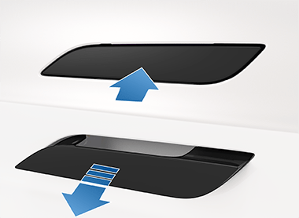
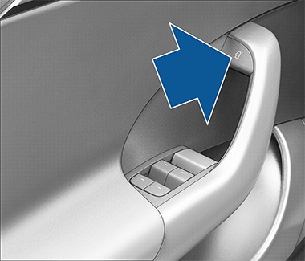

Locking and unlocking Model S with your key fob is conveniently hands-free. Although you must be carrying a paired key fob, there is no need to use it. Model S has sensors around the vehicle that can recognize the presence of a key fob within a range of approximately six feet (two meters). Therefore, you can keep your key fob in your pocket or purse and press the door handle to unlock and extend the handle. When carrying your key fob with you, you can also open the trunk without having to use the key by pressing the liftgate's exterior switch. If Walk-Away Door Lock is enabled, Model S automatically locks when you exit and the key fob is no longer in range (see Walk-Away Door Lock). Passive locking and unlocking is automatically enabled when you pair your key fob to Model S. Although you can use the same key fob with multiple vehicles, it can only be paired to one vehicle at a time. To activate a paired key fob to a different vehicle, touch the flat side onto the driver's side door pillar and click any button on the key fob to confirm.
A light press on a door handle extends it provided Model S is unlocked and detects a phone key or key fob nearby. You can set door handles to extend automatically when you approach the drivers side carrying a phone key or key fob by touching Controls > Locks > Auto-Present Handles. Select Exclude Home to disable door handle presentation at home (set your home address by touching Navigate > Set Home). Insert your hand into the handle and pull to open the door. Door handles retract if you do not use them within ten seconds after they extend. Just press a handle to extend it again. Door handles also retract ten seconds after the last door closes, when Model S begins moving, and when you lock Model S.
Model S doors are electrically powered. To open a door while sitting inside, press the button located at the top of the interior door handle and push the door open. You can also use the touchscreen popup to open and close doors when inside Model Swhile the vehicle is in Park . To open a front door in the unlikely situation when Model S has no power, pull up the manual door release located in front of the window switches.
